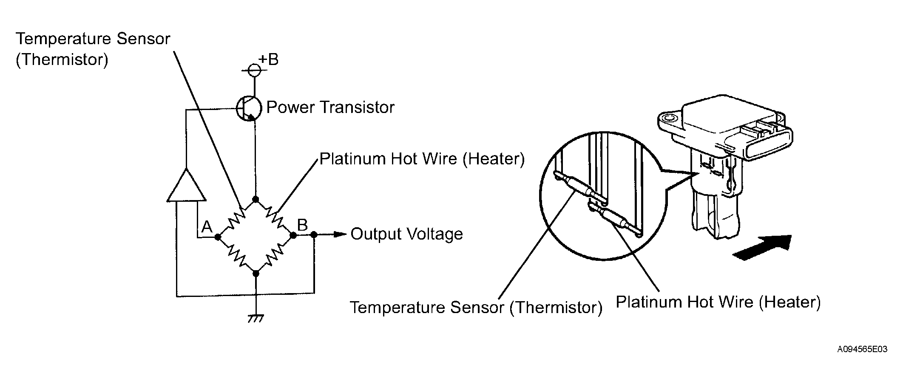

DTC P0100 Mass or Volume Air Flow Circuit; DTC P0102 Mass or Volume Air Flow Circuit Low Input; DTC P0103 Mass or Volume Air Flow Circuit High Input: Description
The Mass Air Flow (MAF) meter is a sensor that measures the amount of air flowing through the valve.
The ECM uses this information to determine the fuel injection time and to provied appropriate air-fuel ratio.
Inside the MAF meter, there is a heated platinum wire which is exposed to the flow of intake air.
By applying a specific electrical current to the wire, the ECM heats it to a given temperature. The flow of incoming air cools both the wire and an internal thermistor, affecting their resistance. To maintain a constant current value, the ECM varies the voltage applied to these components in the MAF meter. The voltage level is proportional to the airflow through the sensor, and the ECM uses it to calculate the intake air volume.
The circuit is constructed so that the platinum hot wire and the temperature sensor provide a bridge circuit, and the power transistor is controlled so that the potentials of A and B remain equal to maintain the predetermined temperature.
HINT:
When any of these DTCs are set, the ECM enters fail-safe mode. During fail-safe mode, the ignition timing is calculated by the ECM according to the engine RPM and throttle valve position. Fail-safe mode continues until a pass condition is detected.

Courtesy of © TOYOTA, LICENSE AGREEMENT TMS1002| DTC No. | DTC Detection Condition | Trouble Area |
|---|---|---|
| P0100 | Open or short in Mass Air Flow (MAF) meter circuit for more than 3 seconds at engine speed of less than 4,000 rpm |
|
| P0102 | Open in Mass Air Flow (MAF) meter circuit for more than 3 seconds at engine speed of less than 4,000 rpm |
|
| P0103 | Short in Mass Air Flow (MAF) meter circuit for more than 3 seconds at engine speed of less than 4,000 rpm |
|
HINT:
When any of these DTCs are set, check the air-flow rate by entering the following menus on the intelligent tester: DIAGNOSIS / ENHANCED OBD II / DATA LIST / PRIMARY / MAF.
| Mass Air Flow Rate (g/sec.) | Malfunctions |
|---|---|
| Approximately 0.0 |
|
| 271.0 or more |
|